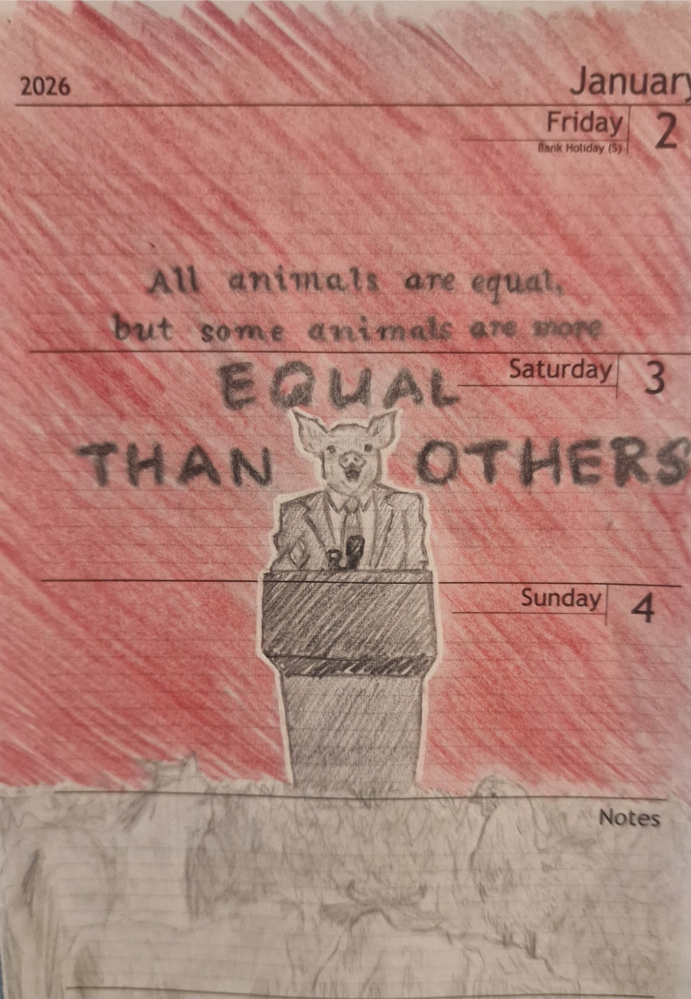
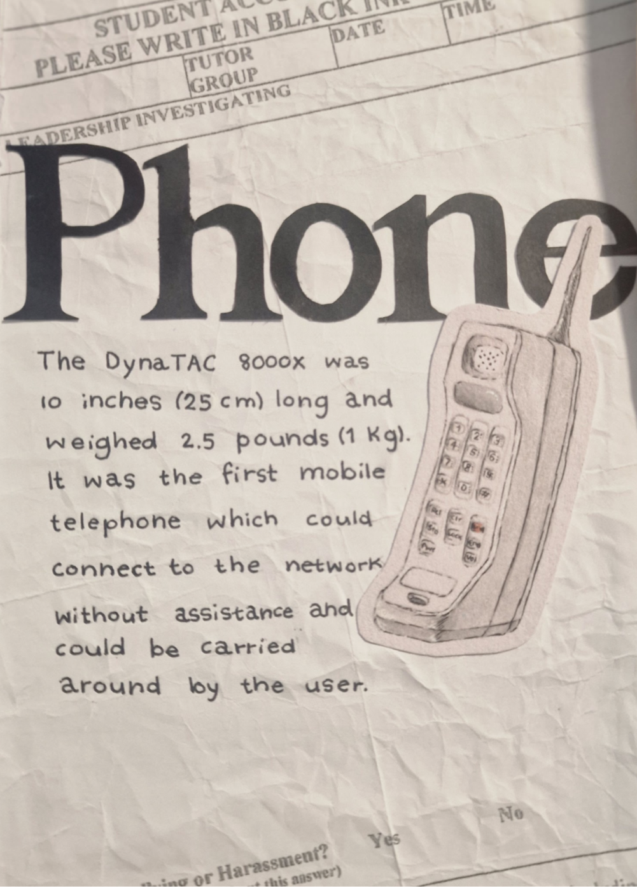
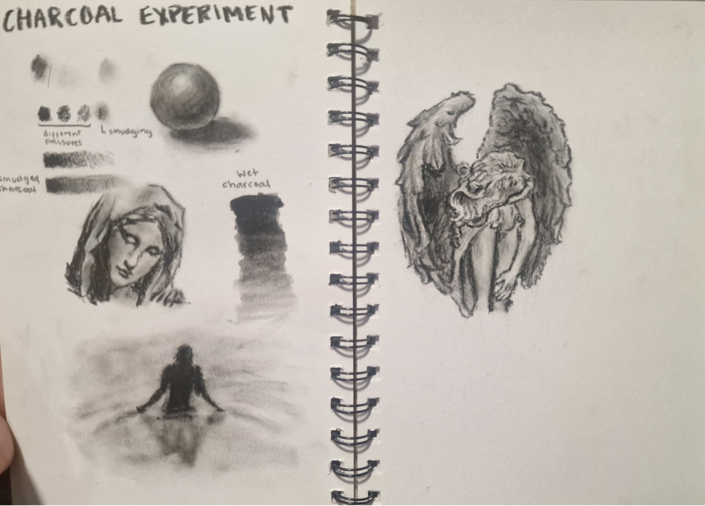
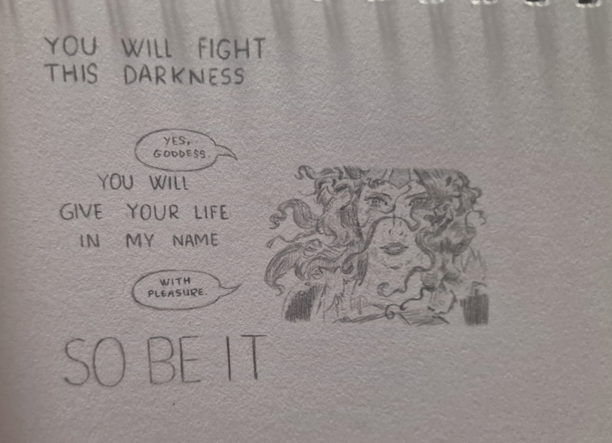
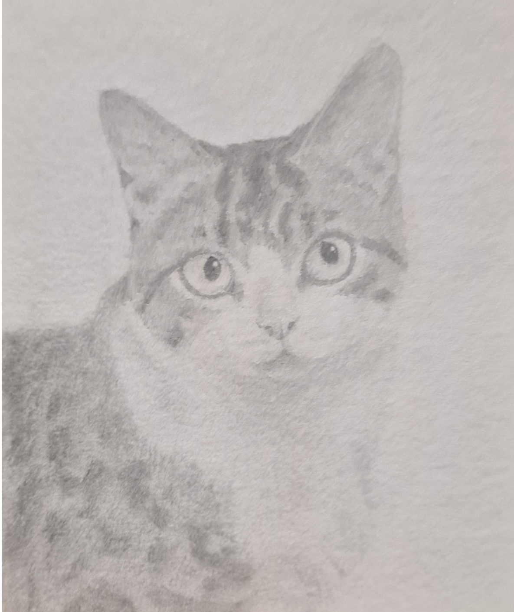
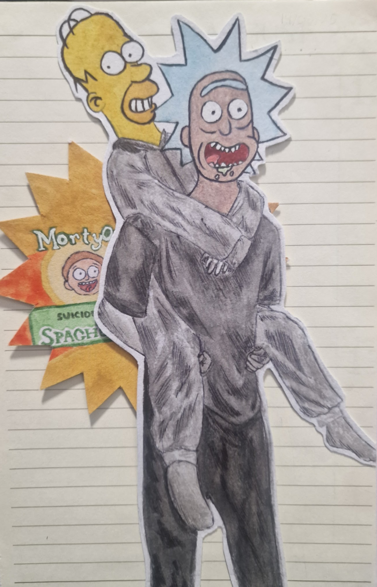
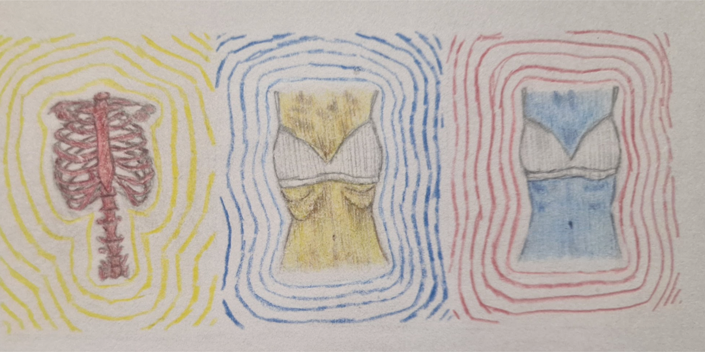
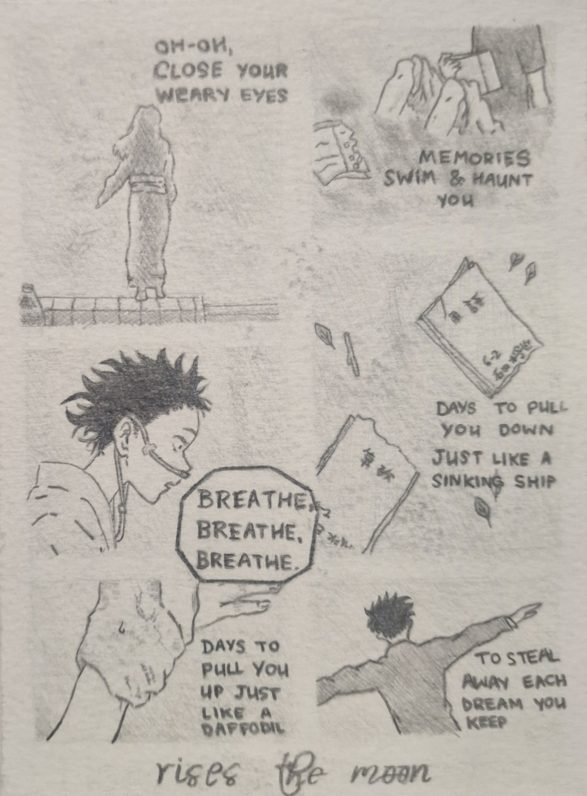
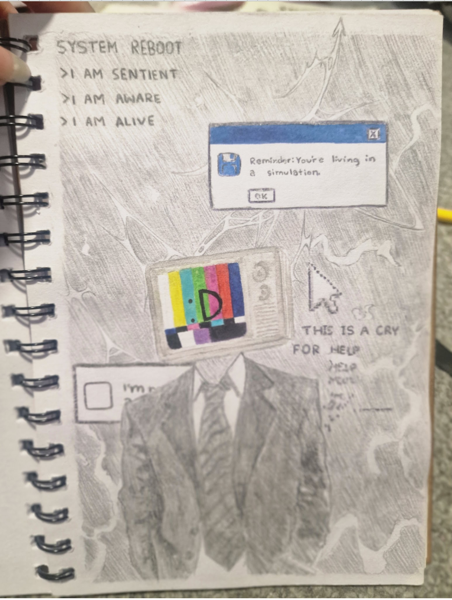

Mario's-sketches
(maka coding note: cant get the pictures to display right for this one, but its like 2 am, ill fix it later. very sorry. good night everyone)
trigger warnings:
part nudity and eating disorder (depending on how you interpret it)
tags:
I used charcoal, graphite, ink and watercolour and i have a drawing from the comic Absolute Wonder Woman, a drawing based on Animal Farm and A Silent Voice









return to library